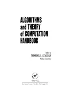

maths tb or so shelf
A First Course in Abstract Algebra - John B Fraleigh - Solution Manual.pdf

Algorithms-Atallah.djvu
Analytical Combinatorics.pdf
An Introduction to the Theory of Numbers - Ivan Niven, Herbert S Zuckerman, Hugh L Montgomery.pdf
Atlas of simple Groups - JH Conway.pdf
A Walk Through Combinatorics.pdf
Combinatoric - A Guided Tour.pdf
Computer algebra and symbolic computation elementary algorithms by Joel S Cohen.pdf
Discrete Mathematics.pdf
Elementary Number Theory - Burton.pdf
Elementary Number Theory - Jone and Jones.pdf
Elementary Number Theory - Kenneth H Rosen.pdf
Elementary Number Theory - Kenneth H Rosen - Solution Manual.pdf
Game Theory - Hans Peters.pdf
Geometry Revisited.pdf
Graph Theory - Harary.djvu
group theory.pdf
Introduction to combinatorics, Course Notes.pdf
Introduction to Real Analysis -Bartle and Sherbert.pdf
Introductory Combinatrics - Brualdi.pdf
Ken Binmore - Game theory, a very short introduction.pdf
Linear Algebra Done Right.pdf
Marek Jarnicki, Peter Pflug - Continuous Nowhere Differentiable Functions_ The Monsters of Analysis (2016).pdf
Modelling Fluid Flow.pdf
Number Theory Lecture notes - Michael Stoll.pdf
Principles of mathematical analysis - Walter Rudin.pdf
Reading Writing And Proving.pdf
Real Analysis Foundations - Krantz.pdf
Sphere Packings, Lattices and Groups.djvu
Stationary Points of Functions of Two Variables.pdf
The math problems notebook.pdf
Topology of Metric Spaces - S Kumaresan.djvu


.webp "Marek Jarnicki, Peter Pflug - Continuous Nowhere Differentiable Functions_ The Monsters of Analysis (2016)")